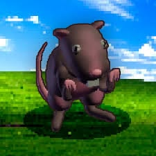

Los roedores son de los mamiferos mas lindo y pequeños en el planeta
Los ratones son pequeños mamíferos roedores estos pequeños seres son conocidos por su agilidad, adaptacion a distintos entornos , flexibilidad y por ser bonitos
Elegí este tema porque me parece que estos animales son mas que una plaga, ellos son utiles para este mundo apesar de que mucha gente no conoce su importancia
Los ratones y los roedores son importantes en mi vida por que me identifico mucho con ellos

Roedores
Mas informacion sobre los roedores
Aun mas informacion sobre los roedores
Sus dientes incisivos crecen hasta 12 centímetros al año
Pueden masticar materiales duros como madera, plomo, aluminio y concreto
Esos pequeños amigos deberian de ser mas apreciados, pueden ser como un animal domestico cualquiera aunque con una exigencia mas elevada pero ellos puedem ser tu mejor amigo<3
Al investigar de estos animales tan curiosos me pude dar cuenta de su importancia y lo importante que pueden llegar a ser